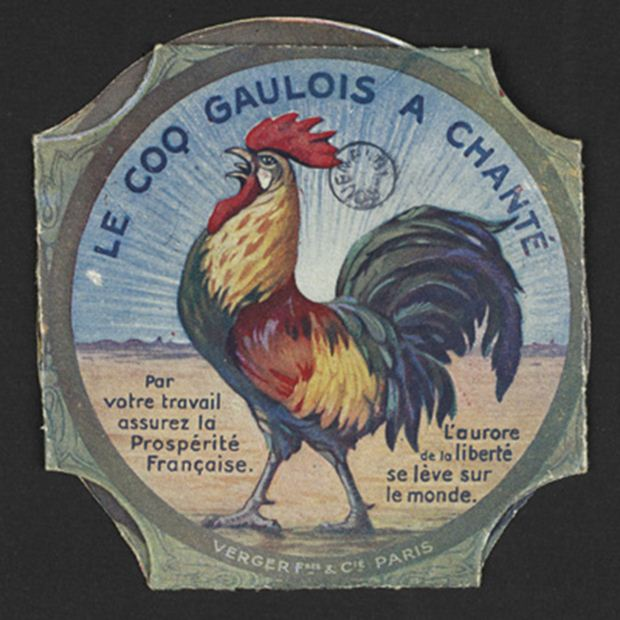
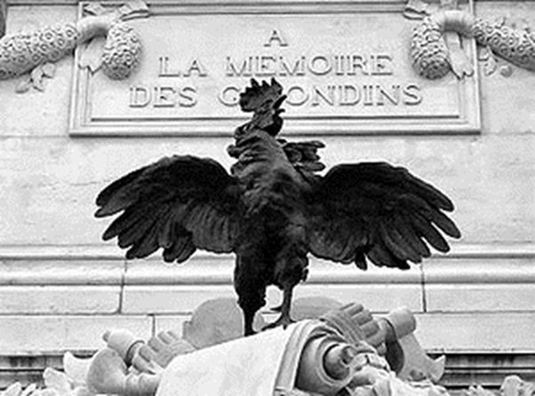
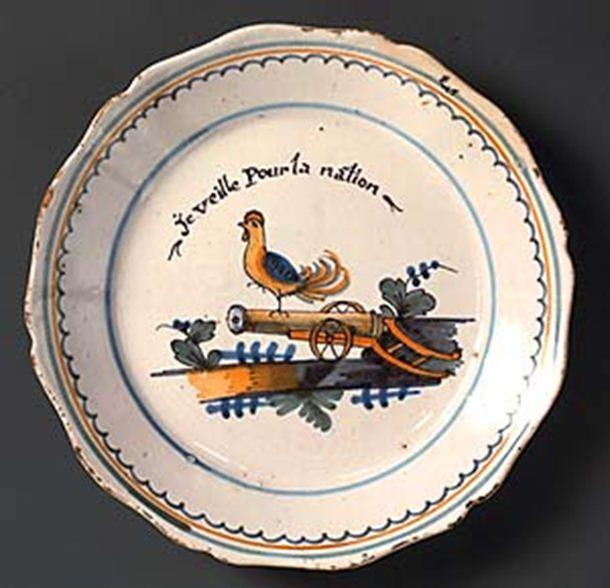
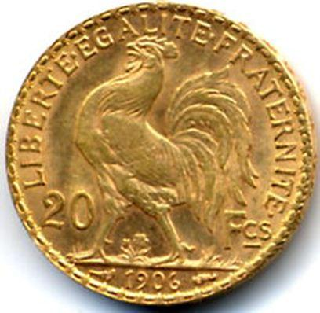
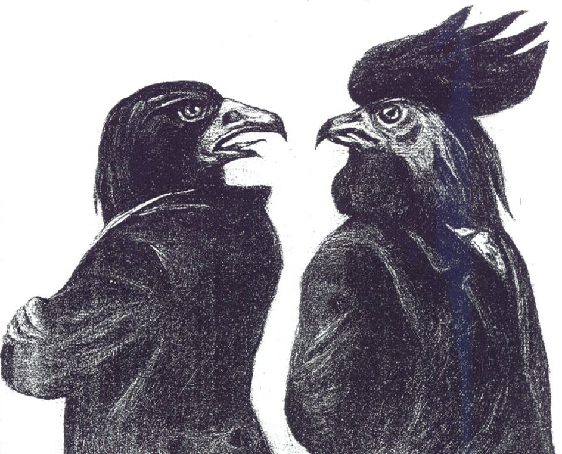
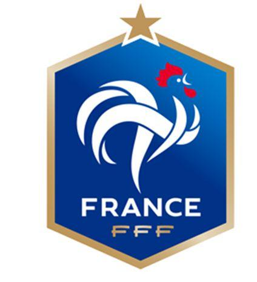

Sans jamais avoir été désigné comme emblème officiel, le coq en est pourtant aujourd'hui un des symboles représentant la France les plus populaires… On le retrouve dans notre culture, mais également au niveau du sport, et de l'histoire. Une telle place peut nous faire nous demander pourquoi le coq est l'emblème de la France...
Ceux de ma génération se souviennent certainement de la réponse faite par Coluche : « Parce que c’est le seul animal à pouvoir encore chanter les deux pieds dans la merde», soulignant tout à la fois ce chauvinisme souvent décrié par les nations étrangères et la situation dramatique dans laquelle la France se trouvait et se trouve malheureusement encore aujourd’hui.
Même si le chauvinisme tant décrié n’est plus aujourd’hui d’actualité, puisqu’il est de bon ton d’avoir honte de son pays, de la richesse de son histoire et sa culture, le coq n’en demeure pas moins un symbole populaire, ne serait-ce que dans sa représentation sur les maillots sportifs des équipes nationales.
À l'origine, le coq tient une place importante dans la religion et la mythologie romaine. Oiseau divin, il côtoie Apollon, Minerve ou encore Mars. En Europe, les Grecs anciens lui attribuaient toujours le même symbole d’annonce la Lumière naissante. « Nourrissez le coq et ne l’immolez pas car il est consacré au soleil et à la lune » écrivait Pythagore dans ses « Verts d’or ». Dans la culture chrétienne, le coq est tellement symbolique que pas un des quatre évangélistes n’a omis de le faire figurer dans son texte sacré.
Le coq est certainement le plus ancien emblème de France, l'ayant même en quelque sorte précédé, puisqu'il remonte à l'époque gallo-romaine, période où l'entité politique et géographique «France» n'était pas encore constituée.
Or, ce sont les Romains eux-mêmes qui ont eu les premiers l'idée malicieuse d'associer le coq et la Gaule. Suétone, un auteur romain, remarque, non sans ironie, qu'en latin, coq et gaulois se disent tous deux gallus. Cette homonymie deviendra, pour les Romains, l’objet de moqueries envers le Gaulois qu’ils considèrent à l’instar du gallinacé comme braillard et qui parait bien ridicule face à l’aigle romain.
L’association des « Gallus » semble disparaître avec celle de l’Empire Romain. Mais elle réapparaît à nouveau sous forme de boutade par les ennemis héréditaires des Français : les Anglais. Ceux-ci raillent ainsi Philippe Auguste, roi des Français, le jugeant aussi orgueilleux que l’animal de basse-cour.
Arguant qu'il s'agit d'un volatile courageux, oiseau de la lumière et de la foi, l'ennemi du mal et des ténèbres ami de Jésus-Christ et sans doute un peu par bravade, les rois de France vont adopter le coq comme symbole de la France. Il devient symbole de vigilance, rejoignant en quelque sorte le coq des églises qui attend le lever du jour, image du Soleil de justice, c'est-à-dire du Christ.
Grille du Parc de L’Elysée
Le coq est un symbole solaire fort. Il suffit d’avoir vécu quelque temps auprès d’une basse-cour pour que le symbole soit facilement déchiffré. Le coq, en effet, ne chante pas quand le jour se lève, mais bien avant, lorsqu’il perçoit avant nous la lumière naissante, et c’est en cela qu’il est le premier, chaque matin, à annoncer la fin de l’obscurité, la victoire de la lumière, de l’intelligence sur l’obscurantisme.
Le Directoire le conserve, au milieu d'autres objets, sur son sceau ; il somme le casque de la France assise, sur le papier à lettres du Premier consul, et se trouve aussi sur un écu, orné du bonnet phrygien et des lettres R.F., sur une médaille de 1801. Pourtant, si la commission des conseillers d'État proposa, en 1804, le coq à Napoléon Ier, celui-ci déclara n'en pas vouloir : « Le coq n'a point de force, il ne peut être l'image d'un empire tel que la France. » Il se fit donc rare par la suite.
En 1817, on déclare à la Société royale des antiquaires de France : « Le coq, gallus, animal consacré au dieu Mars, le symbole de la vigilance, du courage et de la valeur, fut l'emblème des Gaulois ; il est encore celui des Français. »
Peu de temps plus tard, l'imagerie s'empara une nouvelle fois du coq lors de la révolution des « Trois glorieuses ». Le 30 juillet 1830, le lieutenant général duc d'Orléans, c’est-à-dire Louis-Philippe, signe une ordonnance stipulant que le coq doit figurer sur les boutons d'habit, et doit surmonter les drapeaux tricolores de la garde nationale française. Le coq remplace ainsi l'aigle impériale : la patte dextre du volatile s'appuyait sur une boule marquée du mot France.
Lors de la Première Guerre mondiale, l'affirmation du sentiment patriotique va faire du coq la figure de la résistance et du courage français face à l'aigle prussien. Cette représentation manichéenne sera de plus en plus utilisée à partir de ce moment, notamment par les caricaturistes. Il restera, à l’issue du conflit mondial, un symbole fort en surmontant de nombreux monuments aux morts.
Dans le domaine des sports, le coq conquiert son rang quasi officiel depuis qu’en 1914, un certain Parenteau, champion de France de sprint, l’arbora sur son maillot. En rugby, sport qui conserve de solides attaches rurales, les joueurs de l’équipe de France sont toujours qualifiés de « coqs ». Mais le coq dans l’univers du sport n’aura jamais eu autant de gloire sans doute qu’à l’issue de la victoire de l’équipe de France de football lors de la Coupe du Monde de 1998.
Le coq apparaît finalement comme un animal de compromis, venu du fond des siècles et ayant traversé tous les régimes avec des fortunes diverses, sans heurter trop ouvertement telle ou telle sensibilité. Un véritable exploit qui lui vaut bien la reconnaissance de la patrie !
Partager cette page